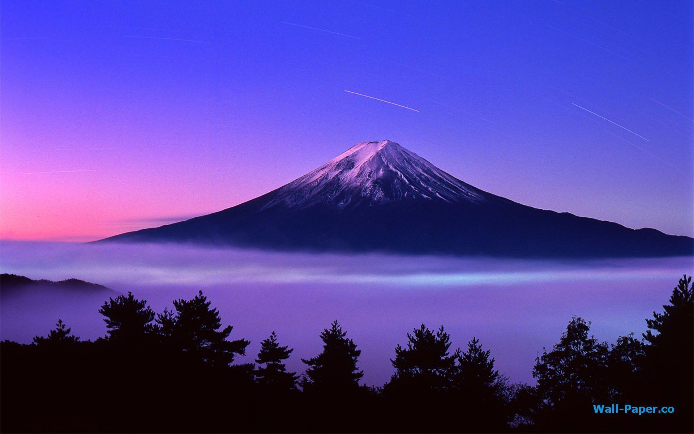

Fujisan (富士山)
Tourist's opinion:
Inclement weather prevented us from visiting the mountain. We just passed by. Still we were impressed by its shape that seems to be simple, but at the same time is monumental and leaves a great impression.
The Eiffel Tower

Tourist's opinion:
There’s something so magical about the Eiffel Tower.
Angkor Wat

Tourist's opinion:
Amazing archaeological place will very very old history. Had an amazing time here with my family. If you're a kind of person who's very interested in archaeological buildings, history and adventure, this is the place you should explore.